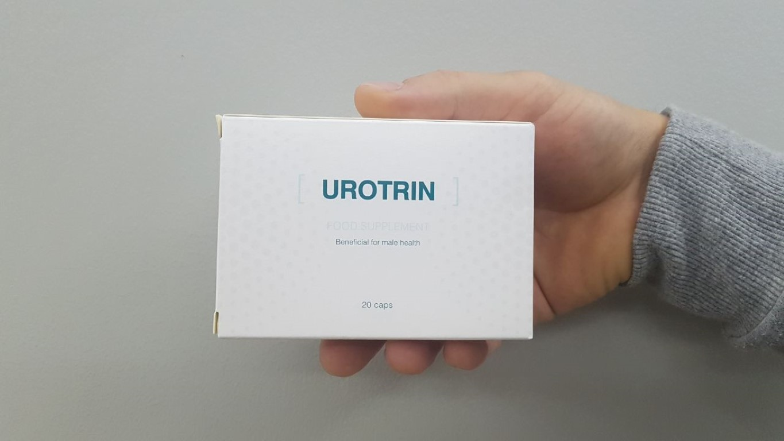
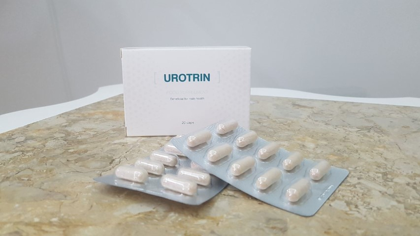
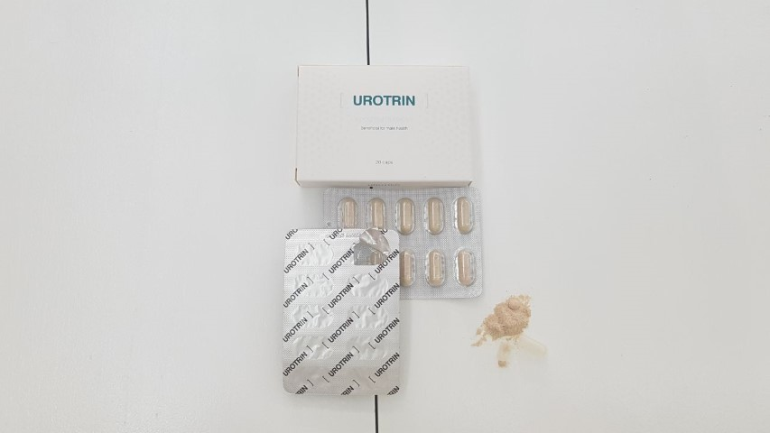
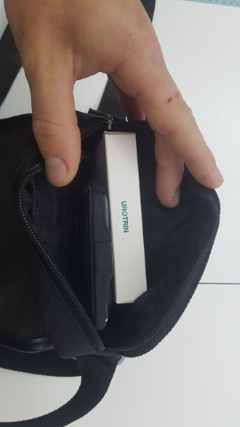

10-ből 9 férfi elégedetlen a péniszméretével, és ez normális. De vajon lehet-e növelni műtét, megkérdőjelezhető pneumatikus pumpák és hialuronsav injekciók nélkül? Kiderült, hogy igen, és sok férfinak sikerült megbizonyosodnia a hatékonyságáról. Amint az már kiderült, ma egy természetes tesztoszteronnövelőről fogunk beszélni, egy olyan kapszula formájában, amelyet a felnőtt filmek színészei használnak.
Richard Quinn: "A rendező világossá tette: vagy csinálok valamit a farkammal egy héten belül, hogy nagyobb legyen, vagy lecserélnek".

"Higgyék el nekem, az én világomban hatalmas a konkurencia. És mindent meg kell tenned annak érdekében, hogy a prémium pornó kategóriában maradhass. Egyszer a rendező azt mondta nekem, hogy a következő forgatásra nagy farkú színészre van szüksége. Igen, használhattam volna pumpát, de annak csak ideiglenes a hatása. Ezért az ország legjobb szakemberéhez fordultam, aki hasznos tanácsokat adott: minél magasabb a tesztoszteron, annál nagyobb a pénisz.
Csak gondoljanak bele! A férfi nemi szerv nem izom, hanem egy üreges test. Vagyis nem lehet úgy kidolgozni, mint holmi bicepszet az edzőteremben. A pénisz mérete és merevedési funkciója csak attól függ, hogy mennyi vért tud felvenni. Ez az oka annak, hogy sok népszerű készítmény után úgy érezzük, a péniszünk megnőtt. Ezek olyan gátlószerek, amelyek átmenetileg javítják a kismedencei szervek véráramlását. De amint a tabletták nem hatnak tovább, a méret visszaáll a fiziológiai minimumra.
A testben csak egy olyan elem van, amely szabályozhatja a nemi szervek véráramlását, és ez a tesztoszteron. És minél magasabb a férfi hormon természetes termelése, annál nagyobb lesz a pénisz. Jelenleg csak két tudományos módszer ismert a tesztoszteron kiválasztásának javítására: a hosszú távú Kegel-gyakorlatok vagy az kúra. Számomra a választás egyértelmű volt. Ha rövid idő alatt kell eredményeket elérni, akkor kell alkalmazni".
5 kényelmetlen kérdés a szakembernek
Sikerült őszinte interjút készítenünk egy híres szakemberrel, és feltenni neki 5 kényelmetlen kérdést. Peter Brahms válaszol azokra a kérdésekre, amelyeket eddig ön nem mert feltenni.

Stúdió: Mennyire lehetséges fiziológiailag megnövelni a péniszt?
Peter Brahms: A testünkben minden arányos. Ez azt jelenti, hogy a pénisz mérete a magasságtól függ, és ha a pénisz kisebb a kívántnál, mindig legalább 40%-kal megnövelhető. Egyeseknek 20 centiméter lesz a határ, másoknak még 30 sem lesz elég.
Korábban a péniszt csak műtéttel lehetett megnagyobbítani. Egy ilyen műtét után azonban előfordulhat, hogy a pénisz egyszerűen nem képes megbirkózni az új terheléssel. Ez azt jelenti, hogy a méret nagyobb lesz, de a beáramló vér mennyisége ugyanaz marad. Tehát, ha a műtétet választja, a plusz centiméterekért gyengébb erekcióval kell fizetnie.
De manapság a pénisz enyhébb módszerekkel is növelhető. Például egy férfi egyszerűen alkalmazhat egy kúrát, ez segíthet növelni a pénisz méretét pontosan annyira, amennyire szerette volna. Ezek a kapszulák egyidejűleg elősegítik a tesztoszteron, a libidó, a merevedési funkció és a reproduktív szerv méretének arányos növekedését. De általánosságban elmondható, hogy bármely férfi természetes módon akár 80%-kal növelheti a péniszét. Az ennél magasabb arány veszélyt jelenthet az egészségre.
Stúdió: Milyen gyorsan növelhető meg a reproduktív szerv?
Peter Brahms: A test normális alkalmazkodásának minimális időtartama az új "dimenziókhoz" egy kúrát tesz ki. Ez elég ahhoz, hogy néhány centimétert nyerjen és jól érezze magát.
Vannak más módok is a reproduktív szerv méretének gyors növelésére, de csak térfogatban. Ezek között számos népszerű készítmény is szerepel, de ezek a vegyi anyagok károsak, sőt, veszélyesek lehetnek a férfiak egészségére.
Stúdió: Mit javasol a pénisz növelésére?
Peter Brahms: Határozottan az . Ez egy kapszula, amely fenyőkivonatot, áfonya kivonatot, kamilla és csalán kivonatokat tartalmaz. Ez egy kiegyensúlyozott koktél, amely segít stimulálni a tesztoszteron természetes, nem mesterséges növekedését. A zsírsavak magnéziumsói nevű összetevőjének köszönhetően tisztítja a vért, és növeli a húgyúti rendszer oxigén- és vitaminellátását.
Vicces módon, ezt a készítményt eredetileg a prosztatabetegségek megelőzésére és a libidó növelésére hozták forgalomba, a jól ismert kék tabletták természetes megfelelőjeként. A kutatások után azonban felfedeztek egy "mellékhatást" — a férfiak nemi szerve gyorsan növekedni kezdett.
Stúdió Az átlagos péniszméret 13 cm, de a legtöbb férfi 20 cm-t szeretne. Az segíthet nekik?
Peter Brahms: Egy teljes kúra segíthet a méret növelésében. De nem ajánlom, hogy olyan méretet kergessenek, amely több mint 80%-kal hosszabb az eredetinél. Valójában a 13 és 20 cm közötti növekedés a fiziológiai normán belül van.
Amennyiben hosszabb méretre vágyik, legalább két átfogó kúra (2-3 csomag - a szerk. megjegyzése) alatt elérhető. De hat hónapos szünettel.
Stúdió: Kihez forduljunk a pénisznövelés érdekében?
Peter Brahms: A modern pénisznövelő termékek annyira fejlettek, hogy manapság már otthoni körülmények között is el lehet érni eredményeket. És a legjobb az egészben az, hogy a hatás szó szerint évekig tarthat, és utána elegendő egy támogató kúra elvégzése. Különösen azért, mert az online is meg lehet rendelni, és mindezt névtelenül. Az optimális kúrát pedig egy egyszerű kalkulátor segítségével önállóan is ki lehet számolni.
Frissítve: bevitel számítási kalkulátor
Tudja meg, hány kapszulát kell bevennie a megfelelő méret eléréséhez:
Az Ön esetében a pénisz megnagyobbodásának normális mértéke 2 centiméter 10 nap alatt. Vegyen be naponta kétszer 1 kapszula et (a csomagot 10 napra tervezték, a kúra egy hónappal meghosszabbítható).
Továbbá ön is részt vehet a sorsoláson, ahol akár 50%-os kedvezményt is nyerhet az első megrendelésére
Adja meg az összes értéket a kalkulátorban
Hogyan működik az
Az egy aktív tesztoszteron serkentő. Komplex hatással van a nemi rendszerre, ezért minden férfi számára, korosztálytól függetlenül a legjobb eszköz. A kapszula túlnyomórészt növényi összetevőkön alapul, amelyek mindegyike fokozza egymás hatékonyságát (szinergiahatás):
- Fenyőkivonat. Javítja a hormon panelt ami jótékonyan hat a prosztata egészségére és növeli a libidót.
- Áfonya kivonat. Természetes hatékonyságú szer a húgyúti fertőzések ellen. A hatás a proantociánok hatásának köszönhető, amelyek nem engedik a baktériumokat behatolni a húgyutakba.
- Kamilla kivonat. Tisztítja a vért, növeli a húgyutak oxigén- és vitaminellátását.
- Csalán kivonat. Serkenti a fő férfi hormon - a tesztoszteron - szintézisét, a kivonatot alkotó 6 izolektinnek köszönhetően, ami jótékony hatással van a teljes férfi urogenitális rendszerre.
- Zsírsavak magnéziumsói. Tisztítja a vért, növeli a húgyúti rendszer oxigén- és vitaminellátását.
Kedvezmények sorsolása az első megrendeléshez
-ig bezárólag: akár 50% kedvezmény az első megrendelésére*
*A promóció csak akkor érvényes, ha a kapszulák a forgalmazó raktárkészletén vannak.

Hozzászólás írása


Néhány hete szedem az . Még korai beszélni az eredményekről, de észrevettem, hogy több energiám van. Még a kopasz foltjaimon is elkezdett nőni a haj!

155Még mindig nem értem, hol lehet megvásárolni ezeket a kapszulákat?
38Próbálj meg nyerni egy kedvezményt, majd ezután megjelenik egy megrendelőlap
22Érdekes, köszönöm!
13Sikerült megrendelnem az kedvezményes áron! A csomag tegnap érkezett, utánvéttel fizettem

74Szóval ez a titok!
3Azt hittem, itt a nyugdíj és lassan elbúcsúzhatok a szextől, de nem. Egy kúra után visszanyertem a férfiasságom

17Félek az öregedéstől... Talán megrendelem megelőzésre.
3Már egy hónapja edzek, próbálok helyesen táplálkozni, és szedem az , így most a feleségem nem tud betelni velem. Minden rendben van az ágyban, jobban alszom, kevésbé vagyok ideges.
29Én is megkaptam a csomagot. Első ránézésre a kapszulák közepes méretűek, ezért gondolom, nem lesz gond a bevételükkel.

25Régen injekciót használtam a tesztoszteronom növelésére. Most már szívgondjaim is vannak...
14Nem hittem igazán az hatásában, de már bánom! Újra férfinek érzem magam, szerintem külsőre még meg is fiatalodtam.
23